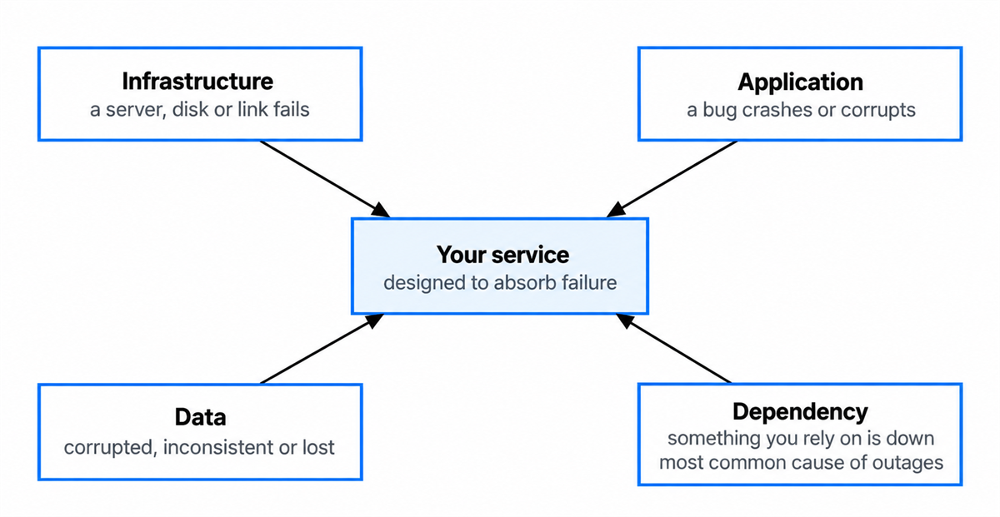
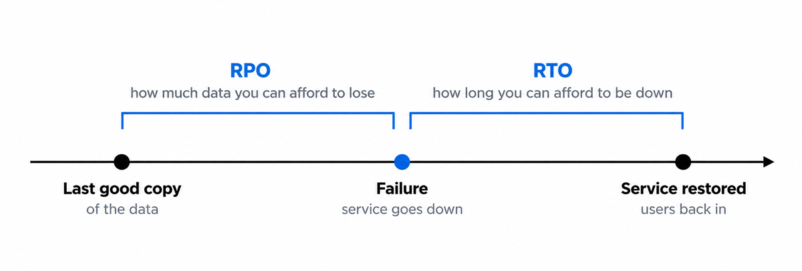
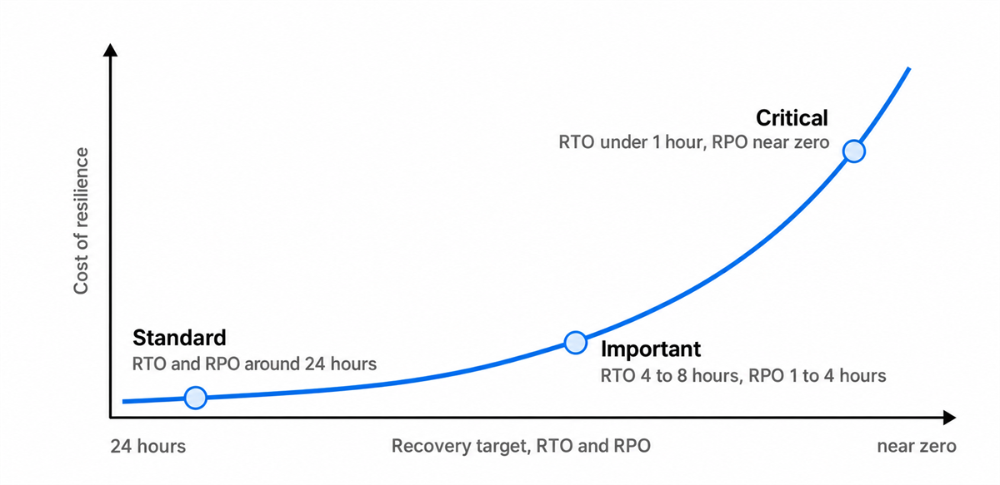
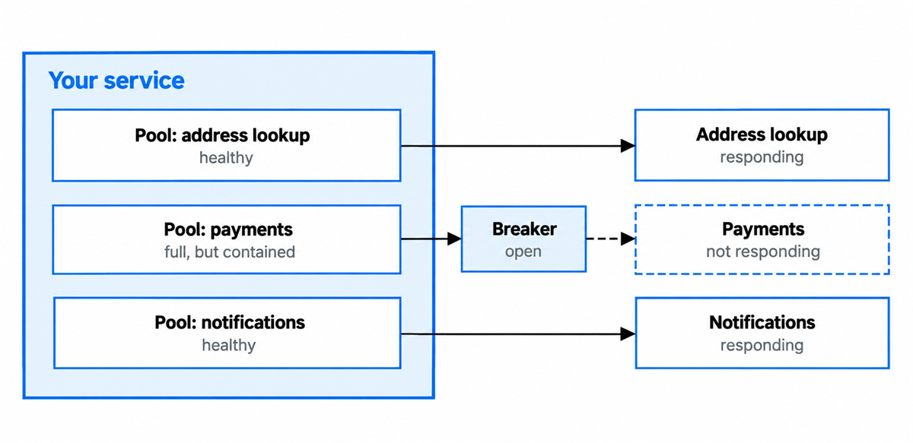
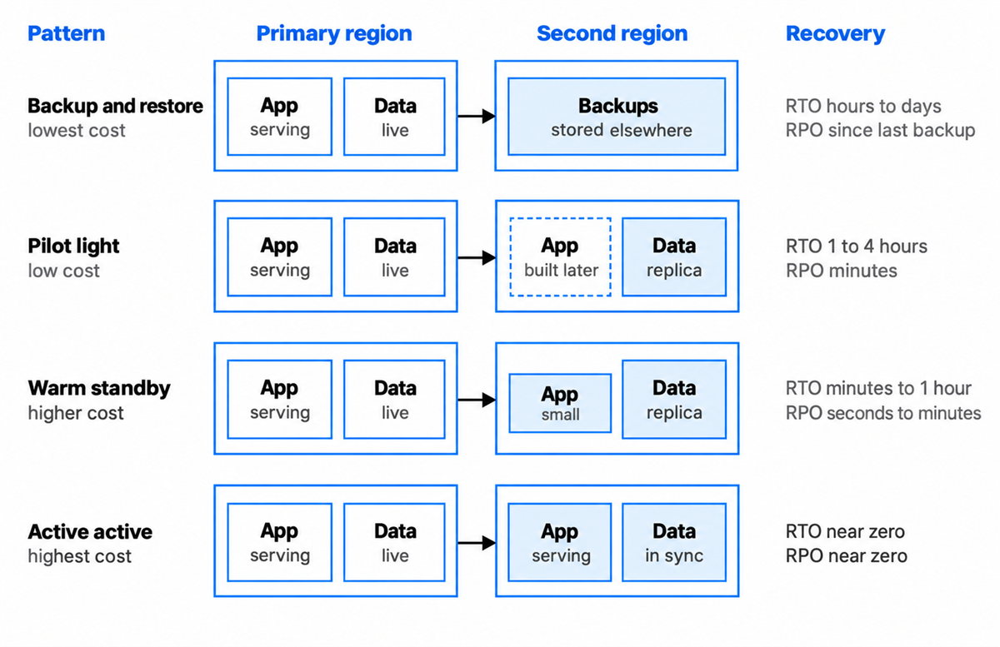
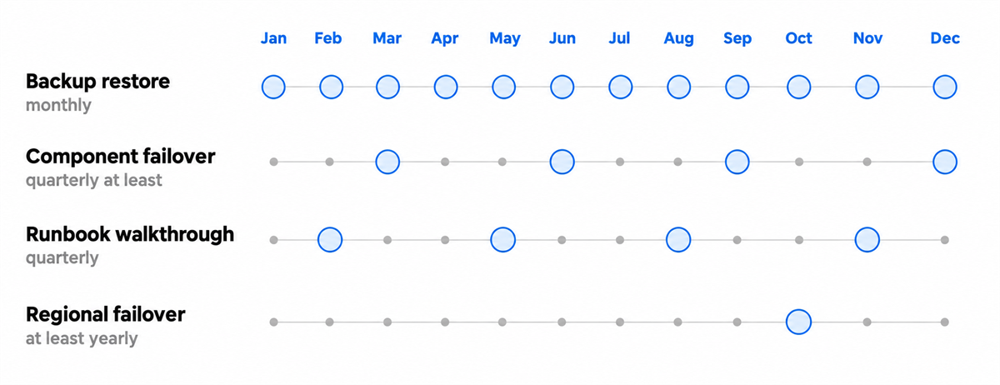
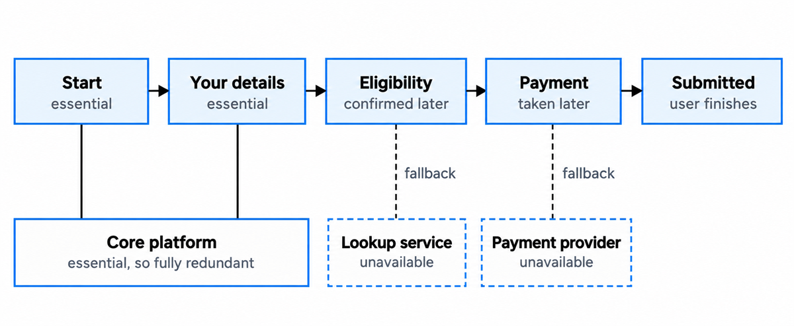

Resilience, disaster recovery and business continuity
Design services that recover fast and lose as little as possible when they fail.
You'll come away with:
- How to turn service criticality into RTO and RPO targets a service owner will sign up to
- The patterns that stop failure spreading across infrastructure, application, data and dependencies
- How to choose between the four disaster recovery patterns without overspending
- What the Cyber Assessment Framework, GovAssure and service assessors expect, and how to test for it
Resilience is decided at design time
Government services fail. Infrastructure fails, cloud regions fail, databases corrupt, third-party APIs go down and operators make mistakes. The question worth asking is whether your architecture lets the service recover quickly, lose as little data as possible and keep the trust of the people who depend on it. In government that trust carries real weight. A benefits system that is down leaves vulnerable people without money they need. A border system outage builds queues at the ports. A tax system that falls over during a filing deadline leaves people unable to meet a legal obligation on time.
Resilience is a property of the architecture, and it emerges from decisions made at the very beginning. A system designed without it is usually expensive to make resilient later, because the fixes reach into its structure. A resilient service keeps operating when components fail, perhaps at reduced capacity. It recovers quickly when failure lands, loses minimal or no data on the way, and degrades gracefully instead of collapsing all at once.
Five design decisions do most of that work:
- Redundancy, so one instance of a critical component can fail without taking the whole service down
- Isolation, so a failure in one component cannot cascade into the others
- Statelessness, so services hold no critical state in memory and can be restarted without losing data
- Idempotency, so an operation can be retried safely without duplicate side effects
- Observability, so failures are detected quickly and diagnosed accurately
Failure starts in four places, and the architecture has to answer all of them. Infrastructure fails when a server, disk or network link goes. Application failure is a bug that crashes the service or produces wrong results. Data failure is corruption, inconsistency or loss. Dependency failure is a service you rely on becoming unavailable.

Government sets expectations against all four. GovS 005, the digital functional standard, expects defined service levels, and business continuity and disaster recovery arrangements with clear accountability for services whose failure would present a clear risk to the organisation's objectives. Point 14 of the Service Standard expects teams to operate a reliable service, and the Service Manual's uptime and availability guidance asks for components that fall back to minimal functions when something goes wrong. The Cyber Assessment Framework assesses whether an organisation can keep its essential functions running through disruption. How much of each a service needs depends on how critical it is, and that is where the numbers come in.
Resilience is cheapest when it is designed in from the start.
RTO and RPO are business decisions
Two numbers turn resilience from an aspiration into a requirement you can design against. The recovery time objective, RTO, is the longest the service can be unavailable before it must be restored. An RTO of four hours means back within four hours of failure. An RTO of zero means no downtime at all, which needs active active redundancy. The recovery point objective, RPO, is the most data you can afford to lose, measured in time. An RPO of one hour accepts losing up to an hour of data, so backups or replication must run at least hourly. An RPO of zero accepts no loss, which needs synchronous replication.

Neither number belongs to the architect. Both are business decisions informed by what is technically feasible, and the service owner, product owner or SRO decides what is acceptable based on what downtime and data loss would do to citizens and to the organisation. Your job is to make that trade visible, then design an architecture that meets the targets they choose.
Criticality varies enormously across government. As an illustration rather than a rule, critical services, such as payments processing, border systems and emergency services systems, might need an RTO under an hour and an RPO near zero. That means active active deployment across regions, synchronous replication and automated failover. Important services, such as application processing, case management and reporting, might sit at an RTO of four to eight hours and an RPO of one to four hours, served by standby infrastructure, regular replication of backups and tested failover. Standard services, such as internal tools, reference data publishing and informational services with little traffic, might accept 24 hours for both, and need regular backups and documented recovery procedures.

That curve is the conversation to have with the service owner. Active active deployment across regions with synchronous replication costs far more than a single region with daily backups. Proportion is the whole job. Over engineering resilience for a low criticality service wastes public money, and under engineering it for a critical one leaves a risk nobody should be carrying.
Designing for failure at every layer
Infrastructure failure is the most obvious category, and in my experience rarely the one that causes a government outage. Cloud platforms supply the mechanisms: multiple availability zones in a region, multiple regions per provider, and managed services that handle their own replication and failover. The decisions are yours. Deploy across at least two availability zones, prefer managed services to infrastructure you run yourself, and decide explicitly whether the service's criticality justifies more than one region.
Application failure calls for defensive patterns. A circuit breaker stops a failing dependency from dragging the service down with it. When a downstream service stops responding, the breaker opens and returns a degraded response straight away, instead of waiting for a timeout while every available connection is consumed. A bulkhead isolates failure domains, so a pool of connections reserved for one dependency cannot be exhausted by trouble with another.

Two simpler habits round out the application layer. Retry with exponential backoff handles transient failures without hammering a service that is trying to recover. Health checks let load balancers route traffic away from unhealthy instances automatically.
Data failure needs defence in layers. Point-in-time recovery restores a database to a chosen moment before corruption began, provided that moment is still inside the backup retention period. Read replicas give you performance and a warm standby at once, and replication across regions protects against losing a whole data centre or region. The application carries part of the load too. Validation before writing keeps corrupt data out. Soft deletes make accidental deletions recoverable. Audit trails show what changed, when and by whom, which is what lets you investigate and put things right.
In my experience, dependency failure is where most government outages begin, because modern services lean on many external services and every one of them can fail. Four patterns contain it. Cache with a defined tolerance for staleness, so slightly old data can be served while the source is down. Degrade gracefully, so losing a dependency that is not critical reduces functionality instead of ending the service. Set timeouts with fallbacks, so the service never waits indefinitely. Process asynchronously, queuing work for later instead of failing the user's request.
Every dependency is a failure you have agreed to inherit. Decide now what the service does on the day it goes quiet.
What the Cyber Assessment Framework expects
The NCSC Cyber Assessment Framework is the yardstick for cyber resilience across government. Version 4.0 was published in August 2025, and GovAssure, the government's cyber assurance scheme, assesses critical government systems against the CAF using government-specific profiles. Knowing what it expects lets you design an architecture that holds up when an assessment asks the questions.
The CAF is organised around four objectives: managing security risk, protecting against cyber attacks, detecting cyber security events, and minimising the impact of cyber security incidents. Resilience is named in the second, as principle B5, Resilient networks and systems, and the fourth covers response, recovery and lessons learned. Four expectations across the framework translate directly into design work.
Essential functions must be resilient to disruption. Identify which components support the critical user journeys, and make sure those components have the redundancy to keep the journeys running through a partial failure.
Resilience must be prepared in advance. Backup strategies, failover mechanisms and recovery procedures are designed, implemented and tested from the start, instead of being retrofitted after the first incident.
Response and recovery plans must be tested, and the architecture has to support them. That means observability to detect an incident, isolation to contain it, and recovery mechanisms to restore service.
Lessons must be learned. Comprehensive logging and audit trails support investigation after an incident, and the architecture itself should keep evolving in response to real failures.
Secure by Design, the government approach to building security into digital delivery, points the same way. Its first principle makes a senior risk owner accountable for the service's cyber security risks throughout its life cycle.
Choosing a disaster recovery pattern
Disaster recovery covers the catastrophic case: losing a whole site, region or data centre. Four patterns cover the options, and they differ mainly in how much of the service is already running somewhere else when disaster strikes. The names follow the AWS disaster recovery whitepaper, and the recovery times given for each are indicative rather than guaranteed.

Backup and restore is the simplest and cheapest. Data is backed up, daily or more often, to a separate location. After a failure, new infrastructure is provisioned and the data restored. Recovery takes hours to days depending on provisioning time and data volume, you lose everything since the last backup, and it suits services of low criticality. A pilot light keeps a minimal environment running in a second region, typically just the database with replication and no application servers. On failure you provision the application tier and point it at the replica, which brings recovery to one to four hours and data loss down to minutes of replication lag.
Warm standby runs a complete but scaled down copy of production in the second region. Traffic is redirected and the standby scaled up to production load, giving recovery in minutes to an hour and data loss of seconds to minutes. It fits important services where hours of downtime are unacceptable. Active active runs production in two or more regions at once with traffic spread across them, so when one region fails the others absorb the load without interruption. For the loss of a region, recovery time and data loss both approach zero. Corruption and deletion replicate as well, so active active still needs point-in-time backups. It is the most expensive pattern, and the only one that gets you near zero downtime.
"Anything that matters should be active active."
In my experience, defaulting to active active because it sounds impressive is one of the most common mistakes in government DR design. The RTO and RPO agreed with the service owner should pick the pattern, and for most services they point somewhere cheaper. The opposite mistake does more damage: backup and restore underneath a critical service, where hours of downtime land hard on citizens.
Testing is the only proof you have
A disaster recovery plan that has never been exercised is a hope with a document attached. Untested plans fail in predictable ways: recovery procedures nobody has run can fail on the day, and backups nobody has restored can turn out to be corrupt. Testing works at several levels, each with its own rhythm.

Component failover testing should be automated and routine, monthly or quarterly. Kill a database instance and confirm the replica takes over. Terminate an application instance and confirm the load balancer routes around it. Backup restore testing runs monthly: restore into a test environment and check integrity through the full procedure, including application configuration, data loading and verification. Runbook walkthroughs happen quarterly, with the operations team reading the DR runbook through without executing it, looking for unclear steps, dependencies that have changed and assumptions that no longer hold.
Regional failover testing happens at least once a year. It is disruptive and may need a maintenance window, and it is the only way to confirm that the second region can carry production traffic, that replication is current and that every integration works from there. Chaos engineering goes further, deliberately injecting failures into production to see how the system behaves when several things break at once, or when failure arrives at peak load. Netflix's Chaos Monkey, which the company described in 2011, works this way, randomly disabling production instances. Government services can adopt the same principles with appropriate caution and stakeholder agreement.
Assessors will ask about all of it. There is no fixed list of assessment questions, but point 14 of the Service Standard asks for monitoring and a proportionate plan to respond to problems, so expect a panel to probe DR testing, backup verification and incident response. A service that has never tested its recovery should not expect to pass on the strength of a well written plan. Record every test: what was tested, what worked, what failed and what changed as a result. That record is what shows GovAssure assessors that resilience is actively managed.
Degrading gracefully and telling people the truth
When failure lands, the service has two jobs. Keep providing as much value as it can, and tell users honestly what is happening.
Graceful degradation starts with sorting components into two kinds. Essential components are the ones the service cannot function without, and they need full redundancy. Enhancing components make the service better but are not required, and each one needs defined fallback behaviour. In practice, if the payment service is unavailable, let users finish their application and take payment later instead of blocking the whole transaction. If a data lookup is down, accept the application and tell the user eligibility will be confirmed within 24 hours. If a region fails, serve from the remaining region at slightly higher latency.

Communication deserves the same care as recovery. A bare "service unavailable" message with nothing else is poor practice. Say what is affected and what is not, give an estimated time for resolution, offer other ways to get help such as a phone number or postal address, and update the message as things change. The Service Manual expects a status page you can update during unplanned downtime, and the GOV.UK Design System has a pattern for service unavailable pages. The architecture has to support both: monitoring that detects failure fast enough to update what users see, and content that can be changed quickly without a full deployment.
Then remember the assisted digital channel. When the digital service is down, contact centre staff need to know, need to know what to tell callers, and ideally need a manual workaround so they can keep helping people. The operational communication plan belongs in the resilience architecture alongside the technical recovery.
People can work with a service that says what is broken and when it will be back. The failure they remember is the one that went silent.
This guide covers resilience and disaster recovery for individual digital services. It does not cover organisational business continuity management or crisis management. The criticality tiers, recovery targets and testing rhythms are illustrative teaching aids rather than mandatory thresholds.
Last reviewed October 2026 against the government, NCSC and primary technical sources below. Policy and guidance change, so check the source before relying on it.
- Government Functional Standard GovS 005: Digital
- Service Standard: Point 14, operate a reliable service
- Service Manual: Uptime and availability
- NCSC: Cyber Assessment Framework
- NCSC: CAF v4.0 released
- GovAssure
- Secure by Design
- Secure by Design principles
- AWS: Disaster recovery options in the cloud
- Netflix: The Netflix Simian Army (Chaos Monkey)
- Service Manual: How service assessments work
- GOV.UK Design System: Service unavailable pages